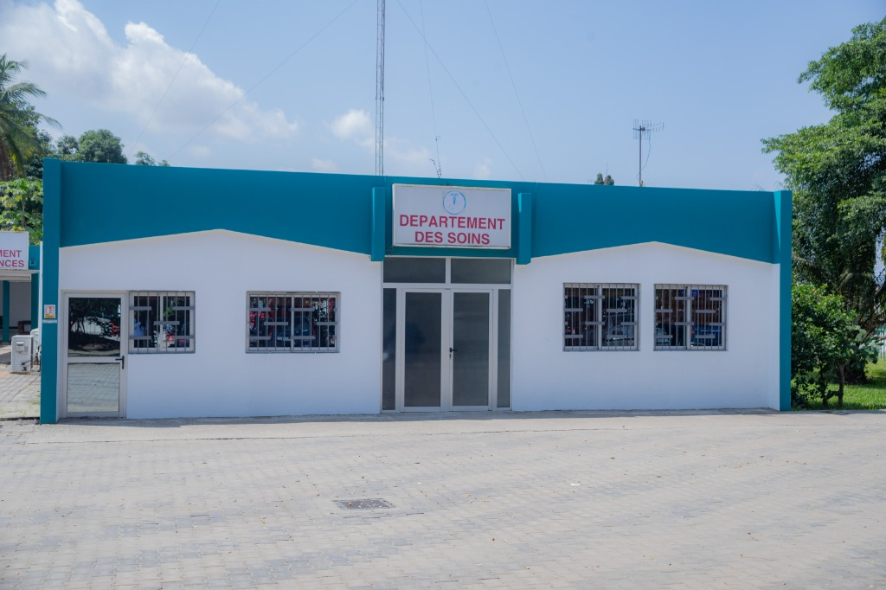

Centre à Vocation Régionale de Médecine Aéronautique & Aéroportuaire
Pôle d'excellence en Afrique de l'Ouest dédié à l'évaluation de l'aptitude physique et mentale des personnels navigants civils et militaires, à l'urgence aéroportuaire H24 et aux consultations médicales spécialisées pour les professionnels et les riverains.
Une infrastructure médicale souveraine pour l'aviation africaine
Créé pour s'affranchir de la dépendance envers les centres européens, le CERMA de la SODEXAM constitue aujourd'hui le carrefour sous-régional de référence pour l'expertise médico-aéronautique.
Contexte de Création & Vision
Historiquement, les pilotes de ligne ivoiriens et ouest-africains, les mécaniciens navigants et les contrôleurs aériens étaient contraints de se rendre en Europe (notamment au CPEMPN en France) ou aux États-Unis pour passer leurs visites d'aptitude médicale de Classe 1, engendrant d'importants coûts financiers et des délais opérationnels pour les compagnies aériennes locales.
Pour combler ce vide stratégique et doter la sous-région d'un centre souverain d'excellence, la SODEXAM a institué la Direction du Centre à Vocation Régionale de Médecine Aéronautique et Aéroportuaire (DCERMA), dirigée par le Dr Hermann Ollo.
Le centre est situé au cœur de la plateforme aéroportuaire Félix Houphouët-Boigny d'Abidjan, garantissant une proximité immédiate avec les acteurs de la navigation aérienne, les compagnies partenaires et les services d'urgence.
Les 3 Pôles Opérationnels du CERMA
-
Pôle Médecine Aéronautique & Expertises Réglementaires : Visites médicales d'admission et de renouvellement pour pilotes de ligne (Classe 1), pilotes privés (Classe 2), contrôleurs de la circulation aérienne (Classe 3) et personnels navigants commerciaux (PNC).
-
Pôle Aéroportuaire & Médecine des Soins : Soins de santé primaires, consultations de médecine générale et d'urgence pour les agents des entreprises de la plateforme aéroportuaire et les riverains de Port-Bouët.
-
Pôle Spécialités & Explorations Fonctionnelles : Plateau technique pluridisciplinaire : ophtalmologie, ORL, cardiologie avec épreuve d'effort, pneumologie, radiologie numérique et laboratoire biomédical.
Des équipements de pointe conformes aux standards OACI
Le CERMA dispose d'un ensemble complet d'équipements médico-techniques biomédicaux étalonnés et certifiés, permettant des bilans exhaustifs en un lieu unique et dans des délais record.
Immersion au cœur des installations du CERMA
Aperçu des infrastructures modernes, des blocs de consultation et des plateaux techniques dédiés à la santé des navigants et des usagers.
Accéder au CERMA — Port-Bouët, Abidjan
Idéalement situé sur la zone aéroportuaire internationale d'Abidjan, le CERMA est directement accessible depuis le boulevard de l'Aéroport.
Coordonnées & Horaires
Urgences aéroportuaires : H24 / 7j/7